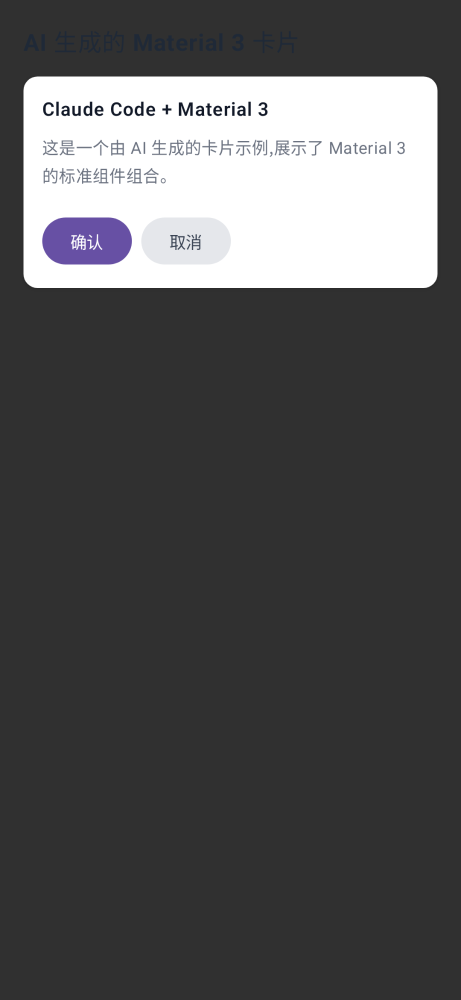
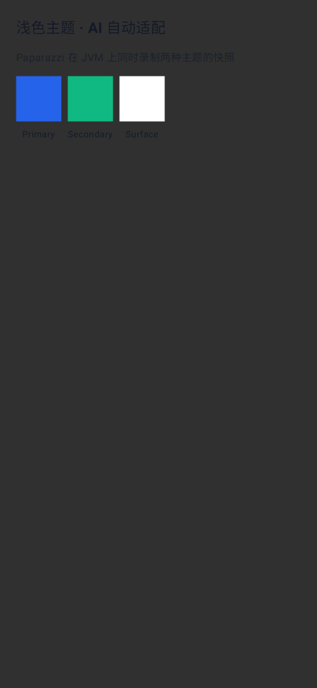
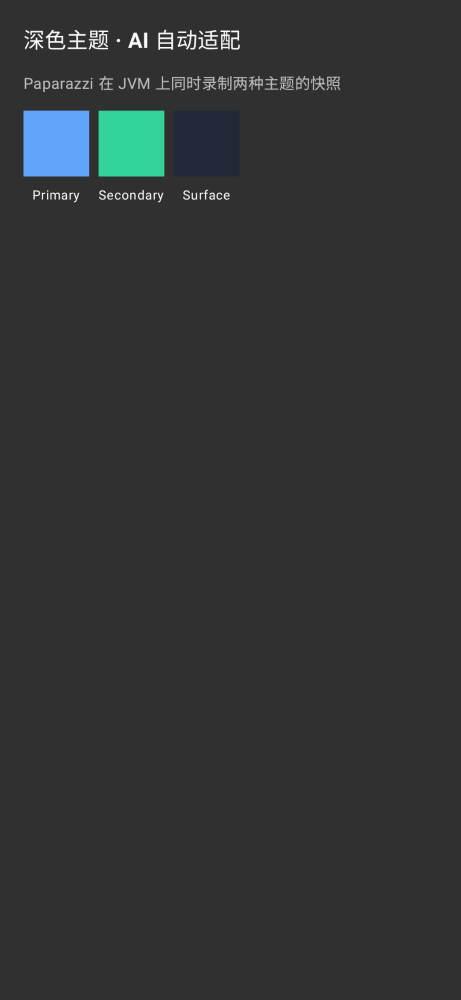
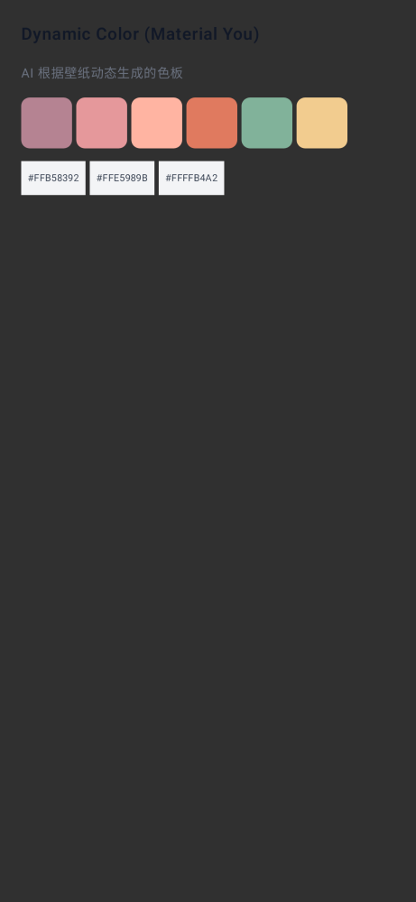
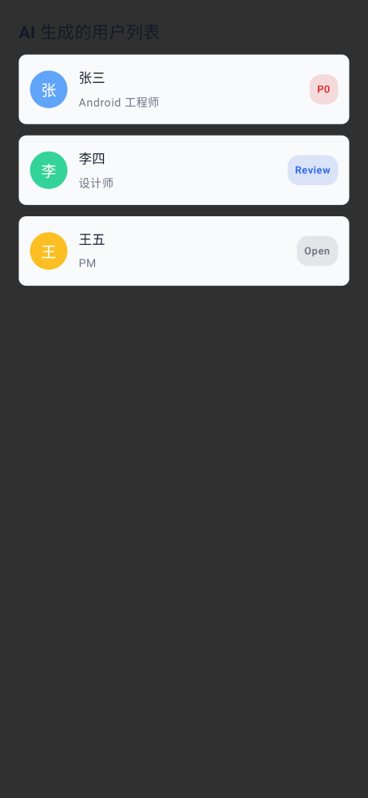
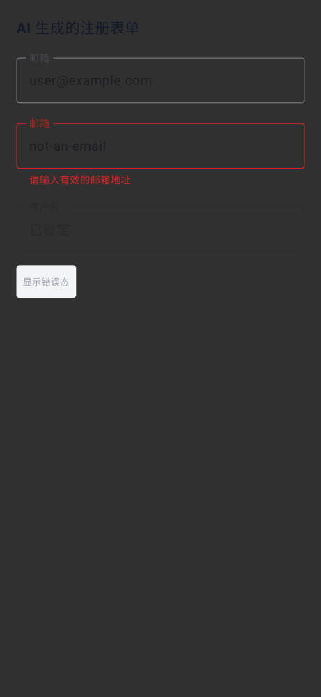

<!DOCTYPE html>
<html lang="en">
<head>
<meta charset="UTF-8">
<meta name="viewport" content="width=device-width, initial-scale=1.0">
<meta name="description" content="AI Coding Agents (Claude Code/Codex) and UI Design Tools (pencil.dev/Figma/Next-Gen AI Design) Collaboration Panorama: Tool Map, Android End-to-End Pipeline, Design Token Engineering, Real Device Regression, and Anti-patterns.">
<meta property="og:type" content="article">
<meta property="og:title" content="AI Coding Agents × UI Design Tools · Maximum Efficiency Collaboration Panorama (Android Example)">
<meta property="og:description" content="pencil.dev + Figma + Claude Code / Codex + Material 3 · Tool Division, MCP Integration, Design-Code Bidirectional Sync, Compose and Paparazzi/Roborazzi Regression.">
<meta property="og:url" content="https://aidoc-zq.netlify.app/topics/ai-ui-design-collab.html">
<meta property="og:image" content="https://aidoc-zq.netlify.app/assets/img/social-preview.png">
<meta name="twitter:card" content="summary_large_image">
<title>AI Coding Agents × UI Design Tools · Maximum Efficiency Collaboration Panorama (Android Example) · 2026.08</title>
<style>
:root{
  --accent:#7c3aed; --accent-2:#ec4899; --accent-soft:#f5edff;
  --ink:#0b1220; --bg:#ffffff; --bg-side:#fafbfc; --bg-code:#0b1220;
  --text:#1f2430; --text-2:#5a6272; --text-3:#8b93a5;
  --border:#e7eaf0; --border-2:#d9dee8;
  --tip-bg:#f0fdf6; --warn-bg:#fff8ec; --note-bg:#eef6fe;
  --radius:12px;
  --font:-apple-system,BlinkMacSystemFont,"SF Pro SC","PingFang SC","Helvetica Neue","Microsoft YaHei",sans-serif;
  --mono:"SF Mono",ui-monospace,SFMono-Regular,Menlo,Consolas,"JetBrains Mono",monospace;
}
*{margin:0;padding:0;box-sizing:border-box}
html{scroll-behavior:smooth}
body{font-family:var(--font);color:var(--text);background:var(--bg);line-height:1.78;font-size:15.5px}
::selection{background:var(--accent);color:#fff}

.topbar{position:fixed;top:0;left:0;right:0;height:60px;z-index:100;display:flex;align-items:center;gap:14px;
  padding:0 24px;background:rgba(255,255,255,.85);backdrop-filter:blur(14px);-webkit-backdrop-filter:blur(14px);
  border-bottom:1px solid var(--border)}
.logo{display:flex;align-items:center;gap:10px;font-weight:700;font-size:16.5px}
.logo .mark{width:30px;height:30px;border-radius:8px;background:linear-gradient(135deg,var(--accent),var(--accent-2));
  display:flex;align-items:center;justify-content:center;color:#fff;font-size:14px;font-weight:800}
.logo .sub{font-size:12px;font-weight:500;color:var(--text-3);padding:2px 8px;border:1px solid var(--border-2);border-radius:99px}
.topbar .right{margin-left:auto;font-size:13px;color:var(--text-3)}
.menu-btn{display:none;border:1px solid var(--border-2);background:#fff;border-radius:8px;width:36px;height:36px;
  font-size:16px;cursor:pointer;color:var(--text-2)}

.sidebar{position:fixed;top:60px;left:0;bottom:0;width:272px;overflow-y:auto;background:var(--bg-side);
  border-right:1px solid var(--border);padding:22px 14px 60px;z-index:90}
.sidebar::-webkit-scrollbar{width:5px}
.sidebar::-webkit-scrollbar-thumb{background:var(--border-2);border-radius:99px}
.nav-group{margin-bottom:18px}
.nav-group>.gt{font-size:11.5px;font-weight:700;color:var(--text-3);text-transform:uppercase;letter-spacing:.12em;padding:6px 12px}
.nav-group a{display:flex;align-items:center;gap:8px;padding:6.5px 12px;border-radius:8px;color:var(--text-2);
  text-decoration:none;font-size:13.8px;transition:.15s}
.nav-group a .no{font-family:var(--mono);font-size:11px;color:var(--text-3);min-width:20px}
.nav-group a:hover{background:#f0f2f7;color:var(--text)}
.nav-group a.active{background:var(--accent-soft);color:var(--accent);font-weight:600}
.nav-group a.active .no{color:var(--accent)}

.main{margin-left:272px;padding:60px 0 0}
.wrap{max-width:920px;margin:0 auto;padding:0 44px 120px}

.hero{margin:40px 0 0;border-radius:20px;background:
  radial-gradient(1000px 400px at 80% -20%,rgba(124,58,237,.35),transparent 60%),
  radial-gradient(800px 400px at 10% 120%,rgba(236,72,153,.35),transparent 60%),
  var(--ink);
  color:#eaf1fb;padding:56px 52px 48px;position:relative;overflow:hidden}
.hero .badge{display:inline-flex;font-size:12.5px;color:#c4b5fd;font-weight:600;background:rgba(124,58,237,.14);
  border:1px solid rgba(124,58,237,.35);padding:5px 14px;border-radius:99px;margin-bottom:20px}
.hero h1{font-size:38px;line-height:1.28;letter-spacing:-.5px;font-weight:800;color:#fff}
.hero h1 .grad{background:linear-gradient(90deg,#c4b5fd,#f9a8d4);-webkit-background-clip:text;background-clip:text;color:transparent}
.hero p.lead{margin-top:16px;font-size:16px;color:#c8d2e6;max-width:680px}
.hero .meta{margin-top:26px;display:flex;flex-wrap:wrap;gap:10px;font-size:12.5px;color:#94a3c0}
.hero .meta span{background:rgba(255,255,255,.06);border:1px solid rgba(255,255,255,.12);padding:4px 12px;border-radius:99px}

.stats{display:grid;grid-template-columns:repeat(auto-fit,minmax(170px,1fr));gap:14px;margin:26px 0 8px}
.stat{border:1px solid var(--border);border-radius:var(--radius);padding:18px 20px;background:#fff}
.stat b{display:block;font-size:24px;font-weight:800;letter-spacing:-.5px;
  background:linear-gradient(90deg,var(--accent),var(--accent-2));-webkit-background-clip:text;background-clip:text;color:transparent}
.stat span{font-size:12.5px;color:var(--text-3)}

section{padding-top:8px}
.sec-tag{display:inline-block;font-size:12px;font-weight:700;color:var(--accent);letter-spacing:.1em;
  text-transform:uppercase;margin:56px 0 6px}
h2{font-size:27px;font-weight:800;letter-spacing:-.3px;padding-bottom:14px;margin-bottom:22px;
  border-bottom:1px solid var(--border);scroll-margin-top:84px}
h3{font-size:19px;font-weight:700;margin:32px 0 12px;scroll-margin-top:84px}
h4{font-size:15.5px;font-weight:700;margin:22px 0 8px}
p{margin:0 0 14px}
ul,ol{padding-left:24px;margin:0 0 16px}
li{margin-bottom:6px}
a{color:var(--accent)}
strong{font-weight:650}
.src{font-size:12.5px;color:var(--text-3)}
.src a{color:var(--text-3);text-decoration:underline dotted}

.callout{border-radius:10px;padding:14px 18px;margin:18px 0;font-size:14.5px;border:1px solid transparent}
.callout b.t{display:block;margin-bottom:4px;font-size:13.5px}
.callout.note{background:var(--note-bg);border-color:#c3e3fb}
.callout.note b.t{color:#0284c7}
.callout.tip{background:var(--tip-bg);border-color:#bbedd2}
.callout.tip b.t{color:#16a34a}
.callout.warn{background:var(--warn-bg);border-color:#fbe0ae}
.callout.warn b.t{color:#d97706}

code{font-family:var(--mono);font-size:13px;background:#f2f4f9;border:1px solid var(--border);
  padding:1.5px 6px;border-radius:6px;color:#0369a1}
pre{background:var(--bg-code);color:#dbe4f5;border-radius:12px;padding:18px 20px;overflow-x:auto;
  margin:16px 0 20px;font-size:13px;line-height:1.7;box-shadow:inset 0 0 0 1px rgba(255,255,255,.06)}
pre code{background:none;border:none;padding:0;color:inherit;font-size:inherit}
pre .c{color:#7c8aa5}

.tbl{width:100%;border-collapse:collapse;margin:16px 0 24px;font-size:14px}
.tbl th{text-align:left;font-size:12.5px;color:var(--text-3);font-weight:700;letter-spacing:.05em;
  padding:10px 14px;border-bottom:2px solid var(--border-2);background:#fafbfd}
.tbl td{padding:9px 14px;border-bottom:1px solid var(--border);vertical-align:top}
.tbl tr:hover td{background:#fafcff}
kbd{font-family:var(--mono);font-size:12px;background:#fff;border:1px solid var(--border-2);
  border-bottom-width:2px;border-radius:6px;padding:2px 7px;color:var(--text-2);white-space:nowrap}

.steps{counter-reset:st;list-style:none;padding-left:0;margin:16px 0 20px}
.steps li{counter-increment:st;position:relative;padding:0 0 14px 44px;margin:0}
.steps li::before{content:counter(st);position:absolute;left:0;top:1px;width:26px;height:26px;border-radius:99px;
  background:var(--accent-soft);color:var(--accent);font-weight:700;font-size:13px;display:flex;align-items:center;justify-content:center}
.steps li:not(:last-child)::after{content:"";position:absolute;left:12.5px;top:30px;bottom:2px;width:1.5px;background:var(--border)}

/* Tool Cards Grid */
.cards{display:grid;grid-template-columns:repeat(auto-fit,minmax(280px,1fr));gap:14px;margin:20px 0}
.card{border:1px solid var(--border);border-radius:var(--radius);padding:20px 22px;background:#fff;transition:.2s}
.card:hover{border-color:var(--accent);box-shadow:0 6px 22px rgba(124,58,237,.10)}
.card .name{font-weight:700;font-size:15.5px;margin-bottom:4px;display:flex;align-items:center;gap:8px}
.card .name .icon{font-size:18px}
.card .role{font-size:12px;color:var(--accent);font-weight:600;letter-spacing:.04em;text-transform:uppercase;margin-bottom:8px}
.card p{font-size:13.5px;color:var(--text-2);margin:0}
.card .links{margin-top:10px;display:flex;flex-wrap:wrap;gap:6px}
.card .links a{font-size:12px;color:var(--text-3);text-decoration:none;border:1px solid var(--border);padding:2px 8px;border-radius:6px}
.card .links a:hover{border-color:var(--accent);color:var(--accent)}

/* Pipeline */
.pipeline{display:grid;grid-template-columns:repeat(5,1fr);gap:10px;margin:22px 0 26px}
.pipe-step{border:1px solid var(--border);border-radius:10px;padding:14px 12px;background:#fff;position:relative;text-align:center}
.pipe-step .ps-num{font-family:var(--mono);font-size:11px;color:var(--text-3);font-weight:700}
.pipe-step .ps-icon{font-size:22px;margin:4px 0 6px}
.pipe-step .ps-name{font-size:13px;font-weight:700;margin-bottom:3px}
.pipe-step .ps-tool{font-size:11.5px;color:var(--text-3)}
.pipe-step::after{content:"→";position:absolute;right:-12px;top:50%;transform:translateY(-50%);color:var(--text-3);font-weight:700}
.pipe-step:last-child::after{display:none}
@media (max-width:880px){.pipeline{grid-template-columns:repeat(2,1fr)}.pipe-step::after{display:none}}

/* Paparazzi Screenshot Grid */
.screenshot-grid{display:grid;grid-template-columns:repeat(auto-fit,minmax(280px,1fr));gap:16px;margin:20px 0 24px}
.screenshot-grid figure{margin:0;border:1px solid var(--border);border-radius:10px;overflow:hidden;background:#fff;transition:.2s}
.screenshot-grid figure:hover{border-color:var(--accent);box-shadow:0 4px 14px rgba(124,58,237,.08)}
.screenshot-grid img{width:100%;height:auto;display:block;background:#fafbfc}
.screenshot-grid figcaption{font-size:13px;color:var(--text-2);padding:12px 14px;background:#fafcff;border-top:1px solid var(--border);line-height:1.6}
.screenshot-grid figcaption strong{color:var(--accent)}
@media (max-width:720px){.screenshot-grid{grid-template-columns:1fr}}

/* Comparison Duo Table */
.duo{display:grid;grid-template-columns:1fr 1fr;gap:14px;margin:16px 0 20px}
.duo .bad,.duo .good{border-radius:10px;padding:14px 18px;font-size:14px}
.duo .bad{background:#fef2f2;border:1px solid #fecaca}
.duo .good{background:var(--tip-bg);border:1px solid #bbedd2}
.duo b{display:block;font-size:12.5px;margin-bottom:6px}
.duo .bad b{color:#dc2626}.duo .good b{color:#16a34a}
@media (max-width:720px){.duo{grid-template-columns:1fr}}

/* Prompt Sample Box */
.prompt-box{border:1px solid var(--border);border-left:3px solid var(--accent);border-radius:10px;
  padding:14px 18px;margin:14px 0;background:#fafcff;font-size:14px}
.prompt-box .pt{font-size:11.5px;font-weight:700;color:var(--accent);letter-spacing:.08em;text-transform:uppercase;margin-bottom:6px}
.prompt-box code{background:none;border:none;padding:0;color:var(--text);font-size:13.5px;white-space:pre-wrap;display:block}

.pill{display:inline-block;font-size:11px;font-weight:600;padding:2px 8px;border-radius:99px;letter-spacing:.04em}
.pill.c{background:#e0f2fe;color:#0284c7}
.pill.a{background:#f3e8ff;color:#7c3aed}
.pill.b{background:#fef3c7;color:#d97706}
.pill.d{background:#dcfce7;color:#16a34a}

.divider{height:1px;background:var(--border);margin:56px 0 0}
.footer{margin-top:64px;padding-top:28px;border-top:1px solid var(--border);font-size:13px;color:var(--text-3)}
.top-btn{position:fixed;right:28px;bottom:28px;width:42px;height:42px;border-radius:12px;border:1px solid var(--border-2);
  background:#fff;color:var(--text-2);cursor:pointer;font-size:17px;box-shadow:0 6px 20px rgba(15,23,42,.08);
  opacity:0;pointer-events:none;transition:.25s;z-index:80}
.top-btn.show{opacity:1;pointer-events:auto}
.top-btn:hover{color:var(--accent);border-color:var(--accent)}

@media (max-width:1080px){
  .sidebar{transform:translateX(-100%);transition:.25s}
  .sidebar.open{transform:none;box-shadow:0 0 60px rgba(0,0,0,.15)}
  .main{margin-left:0}
  .menu-btn{display:block}
  .wrap{padding:0 22px 100px}
  .hero{padding:40px 28px 36px}
  .hero h1{font-size:28px}
}
</style>
<link rel="stylesheet" href="../assets/css/site.css">
  <script src="../assets/js/i18n.js"></script>
</head>
<body>

<header class="topbar">
  <button class="menu-btn" id="menuBtn">☰</button>
  <div class="logo"><span class="mark">A×U</span>AI Coding Agents × UI Design<span class="sub">Maximum Efficiency</span></div>
  <div class="right">
    <label class="lang-switch" style="display:inline-flex;align-items:center;cursor:pointer;margin-right:12px;position:relative;" title="Toggle Language">
  <input type="checkbox" id="lang-toggle-cb" style="appearance:none;position:absolute;width:100%;height:100%;cursor:pointer;opacity:0;z-index:2;margin:0;">
  <div style="width:52px;height:24px;background:var(--border-2);border-radius:12px;position:relative;transition:.3s;display:flex;align-items:center;justify-content:space-between;padding:0 6px;font-size:10px;font-weight:700;color:var(--text-3);font-family:var(--font);">
    <span style="z-index:0">中</span><span style="z-index:0">EN</span>
    <div class="knob" style="position:absolute;top:2px;left:2px;width:20px;height:20px;background:#fff;border-radius:50%;box-shadow:0 2px 4px rgba(0,0,0,.1);transition:transform .3s;z-index:1;"></div>
  </div>
</label><a href="../index.en.html" style="color:var(--accent);text-decoration:none;font-weight:500">◂ Topic Center</a>&nbsp;&nbsp;As of 2026-08-05    <span>Verified 2026-08-17</span>
  

<div class="progress" id="prog"></div>

<nav class="sidebar" id="sidebar">
  <div class="side-filter"><input id="sideFilter" placeholder="Filter chapters..."><span class="fk">/</span></div>
  <div class="nav-group">
    <div class="gt">Introduction</div>
    <a href="#intro"><span class="no">00</span>Panorama and Design-Code Gap</a>
  </div>
  <div class="nav-group">
    <div class="gt">Tool Map</div>
    <a href="#map"><span class="no">01</span>Design-Side Tool Positioning</a>
    <a href="#consume"><span class="no">02</span>How AI Agents "See" Design</a>
  </div>
  <div class="nav-group">
    <div class="gt">Android End-to-End</div>
    <a href="#pipeline"><span class="no">03</span>Five-Step Pipeline</a>
    <a href="#tokens"><span class="no">04</span>Figma → Material 3 Token</a>
    <a href="#compose"><span class="no">05</span>Compose Code Gen & Write-back</a>
  </div>
  <div class="nav-group">
    <div class="gt">Quality & Regression</div>
    <a href="#verify"><span class="no">06</span>Real/Virtual Screenshot Regression</a>
    <a href="#sync"><span class="no">07</span>Bidirectional Sync & System Maint.</a>
  </div>
  <div class="nav-group">
    <div class="gt">Practice</div>
    <a href="#cases"><span class="no">08</span>Real Case (E-com Detail Page)</a>
    <a href="#antipatterns"><span class="no">09</span>Anti-patterns & Pitfalls</a>
  </div>
  <div class="nav-group">
    <div class="gt">Appendix</div>
    <a href="#prompts"><span class="no">A</span>Prompt Template Library</a>
    <a href="#ios-web"><span class="no">X</span>iOS / Web Cross-Platform</a>
    <a href="#resources"><span class="no">R</span>Resources & Sources</a>
  </div>
</nav>

<main class="main">
<div class="wrap">

<div class="hero" id="top">
  <div class="badge">🎨 AI Coding Agents × UI Design Tools · Verified August 17, 2026</div>
  <h1>Treat Design Files as "First-Class Citizens"<br><span class="grad">Feed to Claude Code / Codex</span></h1>
  <p class="lead">Designers drawing, developers coding, AI refactoring—these three workflows can finally truly merge in 2026 using three paths: MCP / Visual Context / Design Tokens. This page pieces together pencil.dev, Figma, Material Theme Builder, Jetpack Compose, and Paparazzi / Roborazzi into a <strong>maximum efficiency "Design ↔ Code" pipeline</strong>, primarily from an Android engineer's perspective, with Web / iOS side notes.</p>
  <div class="meta">
    <span>Clear Tool Division</span><span>Full MCP Integration</span><span>Complete Material 3 Bridge</span><span>Real/Virtual Dual Regression</span><span>Verbatim Prompt Templates</span><span>Tri-Platform Quick Ref</span>
  </div>
</div>

<div class="stats">
  <div class="stat"><b>3 Entrances</b><span>Figma · pen.dev · v0/Stitch, take your pick, Galileo merged into Stitch</span></div>
  <div class="stat"><b>2 Channels</b><span>MCP read structure (zero loss) + Screenshot read visual (fallback), not mutually exclusive</span></div>
  <div class="stat"><b>5 Steps</b><span>Android end-to-end: Token → Draft → Generate → Screenshot → Regress</span></div>
  <div class="stat"><b>3 Platforms</b><span>Android / iOS(SwiftUI)/ Web(Tailwind v4 + shadcn) quick ref</span></div>
</div>

<div class="callout warn"><b class="t">This page does not duplicate the existing pen.dev topic</b>We already have <a href="pencil-claude-code-best-practices.html">"pen.dev × Claude Code Best Practices"</a> diving deep into the pencil + Claude Code combo; this page has a broader vision: treating pencil as "one of the design tools", comparing Figma, Stitch, Galileo, v0, focusing on the <strong>unified pattern of AI coding agents consuming design</strong>, and landing on Android Jetpack Compose / Material 3. <strong>It is recommended to read both pages together</strong>.</div>

<section id="intro">
<div class="sec-tag">Introduction 00</div>
<h2>Panorama: Why This Suddenly Became "Must-Do" in 2026</h2>

<h3 data-reveal>Design-Code Gap: Not a Tool Issue, But a Structure Issue</h3>
<p>Before 2024, designers marked pixels in Figma, and developers rewrote them. General AI coding tools (early Copilot) could only generate "looks similar" components based on "patterns seen across the web", completely blind to <strong>your</strong> design system. The output code felt like a "distant cousin of the design"—colors slightly off, spacing wrong by a few pixels, hover states undocumented, harder to refactor than writing from scratch.</p>
<p>In 2026, three things matured together, shrinking the gap to a negligible scale:</p>
<ol>
  <li><strong>MCP (Model Context Protocol) becomes the de facto standard</strong>—pen.dev, Figma, Google Stitch all expose MCP servers. Once equipped, Claude Code / Codex can "read" the precise structure, Tokens, and node relationships of the design file, no longer guessing from images.</li>
  <li><strong>Design tools natively support "Draw + Code" dual output</strong>—pen.dev's <code>.pen</code> files are JSON and Git-diffable; Figma's Dev Mode + Variables expose structured data; Stitch / Galileo output component code directly.</li>
  <li><strong>Real/virtual regression costs drop to zero</strong>—Paparazzi / Roborazzi run Compose screenshots on the JVM, delivering full-device snapshots within 30 seconds after AI modifies the UI, tightening the feedback loop enough to enter CI.</li>
</ol>

<div class="callout note"><b class="t">The Promise of This Page</b>After learning this you will be able to: ① Install MCP for any design tool (pencil / Figma / Stitch) so Claude Code can read it directly; ② Bridge Figma Variables → Material 3 Color Scheme → Compose Theme all the way through; ③ Let Paparazzi / Roborazzi auto-diff for regression after AI modifies the UI; ④ Judge what work AI should do and what must be hand-written.</div>

<h3 data-reveal>Three Things You Must First Agree On</h3>
<ul>
  <li><strong>Design files are "first-class citizen" inputs</strong>—on par with PRs, issues, and CLAUDE.md. They are not reference images, they are the source of truth.</li>
  <li><strong>Design Tokens take priority over visuals</strong>—when AI changes colors, it changes <code>colorScheme.primary</code>, not some hex code; when changing spacing, it changes <code>Spacing.md</code>, not <code>16.dp</code>.</li>
  <li><strong>Regression must have a low-cost closed loop</strong>—no human can review an AI-generated PR every 30 seconds, it must rely on auto-diffing screenshots + key attribute assertions, alerting humans only on anomalies.</li>
</ul>
</section>

<div class="divider"></div>

<section id="map">
<div class="sec-tag">Map 01</div>
<h2>Design-Side Tool Map: Five Roles, Don't Choose Wrong</h2>
<p>In 2026, the market is flooded with "AI-assisted UI design" tools, making it dizzying. Bucketing them by "what they do in the pipeline" makes selection clear:</p>

<div class="cards">
  <div class="card">
    <div class="name"><span class="icon">📐</span>Figma</div>
    <div class="role">Design Source of Truth · Team Collab</div>
    <p>Still the root of design collaboration for most teams. Variables (Design Tokens), Components, and Code Connect give design data "structure", serving as the foundation for MCP output.</p>
    <div class="links"><a href="https://www.figma.com/" target="_blank">Website</a><a href="https://help.figma.com/hc/en-us/sections/14506167395095-AI" target="_blank">AI Capabilities</a><a href="https://github.com/figma/mcp-server-guide" target="_blank">MCP Guide</a></div>
  </div>

  <div class="card">
    <div class="name"><span class="icon">🎨</span>pen.dev (Pencil)</div>
    <div class="role">Design Canvas in IDE · Code Friendly</div>
    <p>Vector canvas built directly into VS Code / Cursor / Antigravity, <code>.pen</code> files are JSON-based, Git-diffable, with a native MCP server, offering the shortest path for Claude Code / Codex to modify UI. We already have a <a href="pencil-claude-code-best-practices.html">dedicated topic</a>.</p>
    <div class="links"><a href="https://pencil.dev/" target="_blank">Website</a><a href="https://docs.pencil.dev/" target="_blank">Official Docs</a></div>
  </div>

  <div class="card">
    <div class="name"><span class="icon">🪄</span>Google Stitch</div>
    <div class="role">AI Draft Generator · 0→1 Quick Sketch</div>
    <p>Google Labs project, <strong>launched at I/O 2025, still wrapping up waitlist in Aug 2026</strong>. Input text or screenshots, and it directly outputs Material 3 Web/Android/iOS high-fidelity drafts, supporting exports to Figma or executable code. Suitable for early exploration when you "don't have a design yet and want to see a few directions".</p>
    <div class="links"><a href="https://stitch.withgoogle.com/" target="_blank">Website</a><a href="https://docs.stitch.withgoogle.com/" target="_blank">Docs</a></div>
  </div>

  <div class="card">
    <div class="name"><span class="icon">⚡</span>v0 by Vercel</div>
    <div class="role">Text / Figma → React + Tailwind + shadcn Code</div>
    <p>By Vercel, <strong>since July 2026 supports directly reading Figma files + Claude Opus 5 model + v0 MCP server</strong> (tools like <code>listMessages</code> / <code>resolveTask</code>), fully GA, accessible on the free tier. Outputs executable UI directly into React / Next.js / Vite projects.</p>
    <div class="links"><a href="https://v0.app/" target="_blank">Website (note v0.app, not v0.dev)</a><a href="https://v0.app/docs/introduction" target="_blank">Docs</a></div>
  </div>
</div>

<div class="callout warn"><b class="t">Outdated Merged Cards Separated</b>Galileo AI ceased independent operations in 2026 (domain <code>usegalileo.ai</code> 308 redirects to Stitch, LinkedIn marked "acquired by Google"), integrating its capabilities into Stitch; Uizard and Visily are independent but lean towards "screenshot → wireframe", which isn't directly related to this topic's "Design ↔ Code" mainline—so three old cards merged into Stitch + v0 two independent cards, Galileo is no longer listed separately. <strong>Verified Date 2026-08-05</strong>.</div>

<h3 data-reveal>Selection Decision Tree</h3>
<p>Don't just use "whatever is newest", choose based on your starting point:</p>
<div class="pipeline">
  <div class="pipe-step"><div class="ps-num">START</div><div class="ps-icon">❓</div><div class="ps-name">Have a Design?</div><div class="ps-tool">→ See next step</div></div>
  <div class="pipe-step"><div class="ps-num">Y1</div><div class="ps-icon">📐</div><div class="ps-name">Figma Team Collab</div><div class="ps-tool">Figma MCP</div></div>
  <div class="pipe-step"><div class="ps-num">Y2</div><div class="ps-icon">🎨</div><div class="ps-name">Solo/Small Team + Likes IDE</div><div class="ps-tool">pen.dev MCP</div></div>
  <div class="pipe-step"><div class="ps-num">N1</div><div class="ps-icon">🪄</div><div class="ps-name">Want 5 Directions</div><div class="ps-tool">Stitch Draft</div></div>
  <div class="pipe-step"><div class="ps-num">N2</div><div class="ps-icon">🤖</div><div class="ps-name">Direct Executable Code</div><div class="ps-tool">v0 (React/Tailwind)</div></div>
</div>

<div class="callout note"><b class="t">2026.8 Selection Cheat Sheet</b><strong>Stitch</strong> (waitlist, Google Labs) = Quickly see multiple directions; <strong>v0</strong> (GA, Vercel) = Directly output React code; <strong>Galileo AI</strong> merged into Stitch, no longer recommended separately. <a href="https://stitch.withgoogle.com/" target="_blank">Stitch</a> / <a href="https://v0.app/" target="_blank">v0.app</a>.</div>
</section>

<div class="divider"></div>

<section id="consume">
  <tr>
    <td><span class="pill d">Exports</span></td>
    <td>Figma Dev Mode "Copy as Compose", pen.dev export React, Stitch "Export to Code"</td>
    <td>Code snippets generated by design tools themselves</td>
    <td>High (but with inherent tool limitations)</td>
    <td>One-time copy and paste, no bidirectional sync</td>
  </tr>
</table>

<div class="callout note"><b class="t">MCP is the "Watershed" of 2026</b>Using MCP, Claude Code can say when generating code, "Use <code>colorScheme.primary</code> for the main color, because it's called <code>brand/primary/500</code> in Figma"; without MCP, it can only look at the screenshot and say "Use blue here". The former is <strong>design system collaboration</strong>, the latter is <strong>pixel-level imitation</strong>. All discussions below assume the MCP channel.</div>

<h3 data-reveal>Specific Connections for the Three Channels</h3>

<h4>① Figma MCP (Official · Most Stable)</h4>
<pre><code># Install official plugin (simplest)
claude plugin install figma@claude-plugins-official

# Or manually add MCP server
claude mcp add --transport http figma https://mcp.figma.com/mcp

# Verify
claude mcp list
# Should see figma / connected</code></pre>
<p>Select a Frame in the Figma file → say in Claude Code "Use Figma MCP to read this Frame's structure and variables, generate the corresponding Compose implementation", and the tools will automatically be called. Core tools:</p>
<table class="tbl">
  <tr><th>Tool</th><th>What It Does</th></tr>
  <tr><td><code>get_design_context</code></td><td>Returns structured React + Tailwind representation (most Web-friendly; Android requires subsequent translation)</td></tr>
  <tr><td><code>get_variable_defs</code></td><td>Extracts Variables (color palettes, font sizes, spacing) and their Light/Dark modes</td></tr>
  <tr><td><code>get_metadata</code></td><td>High-level node map: what Frame, what components, hierarchical relationships</td></tr>
  <tr><td><code>get_screenshot</code></td><td>Visual reference (pixel-level)</td></tr>
</table>
<p>Codex can achieve the same using the <code>[mcp_servers.figma]</code> block in <code>config.toml</code> with <code>url = "https://mcp.figma.com/mcp"</code>.</p>

<h4>② pen.dev MCP (Native, Local, Zero Cloud)</h4>
<p>After installing the VS Code extension <code>highagency.pencildev</code>, pen.dev's built-in MCP service <strong>runs locally</strong>—design data doesn't leave the machine, suitable for privacy-sensitive scenarios. Once Claude Code / Codex sees <code>pencil</code> via <code>/mcp</code>, the toolset is more granular: read nodes, execute modifications, read variables, screenshots. See the <a href="pencil-claude-code-best-practices.html">pen.dev × Claude Code Topic</a> for details.</p>

<h4>③ Visual Channel (Fallback Anytime)</h4>
<p>Without MCP, the most rudimentary yet universal approach is to directly feed design screenshots (or PDFs) to Claude Code, paired with prompts specifying "Generate Compose from the screenshot, use semantic naming from Material 3 ColorScheme for colors". <strong>Pixels can be grabbed, but Tokens cannot</strong>—so this step requires either supplementing with a Figma Variables export or accepting the risk that "the generated code colors won't match the brand colors".</p>

<div class="callout warn"><b class="t">Current State of Codex MCP</b>Codex 0.146.0 natively supports MCP (same protocol as Claude Code), just configure <code>[mcp_servers]</code> in <code>config.toml</code>. The difference lies in UX: Codex is more "task-delivery-oriented", requiring explicit instructions like "After reading the Figma Frame, directly modify the Android project"; Claude Code is more "exploration-oriented", allowing you to ask along the way "Why use primary instead of secondary for this color".</div>
</section>

<div class="divider"></div>

<section id="pipeline">
<div class="sec-tag">End-to-End 03</div>
<h2>Android End-to-End: Five-Step Pipeline</h2>
<p>Piecing all the above tools together creates this <strong>maximum efficiency</strong> path. Every step has reproducible inputs and outputs, relying on zero "inspiration":</p>

<div class="pipeline">
  <div class="pipe-step"><div class="ps-num">STEP 1</div><div class="ps-icon">🎨</div><div class="ps-name">Design Tokens</div><div class="ps-tool">Figma Variables</div></div>
  <div class="pipe-step"><div class="ps-num">STEP 2</div><div class="ps-icon">🖼</div><div class="ps-name">Components/Pages</div><div class="ps-tool">Figma Frame</div></div>
  <div class="pipe-step"><div class="ps-num">STEP 3</div><div class="ps-icon">🤖</div><div class="ps-name">Read + Plan</div><div class="ps-tool">Claude Code / Codex</div></div>
  <div class="pipe-step"><div class="ps-num">STEP 4</div><div class="ps-icon">⚙️</div><div class="ps-name">Generate Code</div><div class="ps-tool">Compose + Unit Tests</div></div>
  <div class="pipe-step"><div class="ps-num">STEP 5</div><div class="ps-icon">📸</div><div class="ps-name">Visual Regression</div><div class="ps-tool">Paparazzi / Roborazzi</div></div>
</div>

<p class="src">Why 5 steps instead of 3? Skip one step and you either lose Token sync (design changes color but code doesn't), or lose regression (AI modifies UI without review). These 5 steps can be parallelized (multiple pages advancing at once) but cannot be omitted.</p>

<h3 data-reveal>STEP 1 · Design Tokens: Figma Variables are the Source of Truth</h3>
<p>Design Tokens are the <strong>named</strong> values for colors / font sizes / spacing / border radii. In Figma, they look like this:</p>
<pre><code>brand/primary/500      → #476810
brand/primary/600      → #3a5609
brand/secondary/500    → #586a4f
surface/background     → #fefbff
surface/onBackground   → #1b1c18
text/display/large     → 57sp / 64lh
text/title/medium      → 16sp / 24lh
spacing/xs             → 4dp
spacing/md             → 16dp
radius/lg              → 16dp</code></pre>
<p>This step is completed on the Figma side using the <strong>Material Theme Builder</strong> (material.io/material-theme-builder) or Figma's built-in Material 3 Design Kit; Claude Code does nothing in this step—it is <strong>structured context</strong> to be used later.</p>

<h3 data-reveal>STEP 2 · Components/Pages: Figma Frame is the Contract</h3>
<p>Each page to be implemented is a Frame in Figma, and the Frame naming must be stable (developers will use it as a key):</p>
<pre><code>📁 Figma: App / 1.0
  📄 Page: ProductDetail
    🟦 Frame: ProductDetailScreen / 360×800 (mobile)
    🟦 Frame: ProductDetailScreen / Dark</code></pre>
<p>Use <strong>Auto Layout</strong> (Figma's Flexbox) + 100% constraints, so when Claude Code reads <code>get_metadata</code>, it gets a structured layout, not absolute coordinates.</p>

<h3 data-reveal>STEP 3 · Read + Plan: Claude Code / Codex Startup</h3>
<p>Start Claude Code in the Android project root (where <code>app/</code> source already exists) and give explicit instructions: <strong>don't let it "figure it out itself", hardcode what to read, where to write, and what to test</strong>.</p>
<div class="prompt-box">
<div class="pt">PROMPT 03-A · Startup</div>
<code>Read Figma Frame `ProductDetailScreen` (node-id 1:23), using figma MCP.
- First call get_variable_defs, drop all Variables into app/src/main/java/.../theme/Color.kt and Type.kt (semantic names aligned with Material 3)
- Then call get_design_context and get_metadata to understand the Frame's structure
- Then plan: 1) Which Composables; 2) Which Previews; 3) Which Paparazzi tests; 4) Which Preview screenshots go into the repo
- Plan using ExitPlanMode for me to review, do not execute directly</code>
</div>

<div class="callout tip"><b class="t">Why "Plan First, Code Later"</b>Claude Code's Plan mode (toggle with <code>Shift+Tab</code>) will first explore the code, generating reviewable implementation steps before executing. Modifying UI is a high-rework area—one misstep and subsequent screenshots will all be red. <strong>Spending 2 minutes reviewing the plan = Saving 20 minutes redoing it</strong>. Codex works the same way (<code>--plan</code> mode).</div>

<h3 data-reveal>STEP 4 · Generate Code: Compose + Tests + Screenshots Trio</h3>
<p>AI will actually produce three types of artifacts, none of which can be missing:</p>
<ol>
  <li><strong>Composable functions</strong>—business components; <strong>using Tokens instead of hardcoding</strong> is a core discipline (<code>MaterialTheme.colorScheme.primary</code> instead of <code>Color(0xFF476810)</code>).</li>
  <li><strong>@Preview annotations</strong>—allows viewing directly in Android Studio's Design panel; Roborazzi will scan these annotations to auto-generate screenshot tests.</li>
  <li><strong>Paparazzi / Roborazzi tests</strong>—takes a set of baseline snapshots, and later when AI modifies the UI, it diffs against the same baseline.</li>
</ol>

<div class="prompt-box">
<div class="pt">PROMPT 03-B · Implementation</div>
<code>Implement according to the plan, constraints:
1. Composables use Material 3 API, all colors/fonts/spacing go through MaterialTheme.colorScheme/typography/shapes
2. Do not hardcode color values; spacing uses Spacing.xs/sm/md/lg constants
3. Add @Preview(name = "Light"), @Preview(name = "Dark", uiMode = UI_MODE_NIGHT_YES) to each screen component
4. Add src/test/.../ProductDetailSnapshotTest.kt to run the two Previews with Paparazzi, run recordPaparazzi first for the baseline
5. Once done, run ./gradlew verifyPaparazziDebug and show me the results</code>
</div>

<h3 data-reveal>STEP 5 · Visual Regression: Choose Paparazzi / Roborazzi</h3>
<p>This step is the <strong>quality gate</strong> of the entire pipeline. See the <a href="#verify">Real/Virtual Screenshot Regression</a> section for details, the core sentence is: <strong>Before AI modifies the UI, have a baseline; after modifying, auto-diff, and push to humans only on anomalies</strong>.</p>
</section>

<div class="divider"></div>

<section id="tokens">
<div class="sec-tag">End-to-End 04</div>
<h2>Figma → Material 3 Token: A Standard Bridge</h2>
<p>Material 3's ColorScheme / Typography / Shapes are Compose's <strong>first-class Design Tokens</strong>; Figma Variables are the design side's <strong>first-class Design Tokens</strong>. The two must strictly correspond one-to-one, otherwise "design changes but code doesn't" is inevitable.</p>

<h3 data-reveal>Official Standard Practice: Material Theme Builder</h3>
<ol class="steps">
  <li>In <a href="https://material.io/material-theme-builder" target="_blank">m3.material.io/theme-builder</a>, pick base colors + secondary colors, and the tool auto-expands into the M3 palette (assigning one of 13 tones to each role).</li>
  <li>Export to "Jetpack Compose" format, yielding <code>Color.kt</code> (5 key colors + derived roles) and <code>Theme.kt</code> (<code>lightColorScheme(...)</code> / <code>darkColorScheme(...)</code>).</li>
  <li>Drop these two files into <code>app/src/main/java/.../ui/theme/</code>.</li>
  <li>In <code>MainActivity</code>, wrap <code>setContent { ... }</code> with <code>ReplyTheme</code> (or your named theme).</li>
  <li>Set the same "base colors + secondary colors" in Figma Material 3 Design Kit (plugin auto-syncs), and Variables align automatically.</li>
</ol>

<h3 data-reveal>Figma Variables ↔ Compose ColorScheme Full Mapping</h3>
<p>All roles in Material 3 ColorScheme and Variables in Figma Material 3 Design Kit have <strong>exactly the same naming</strong> (both use <code>primary / onPrimary / primaryContainer / onPrimaryContainer / secondary / onSecondary / ...</code>). Claude Code can read them via Figma MCP's <code>get_variable_defs</code> and write directly to <code>lightColorScheme(primary = Color(0xFF...), ...)</code>. Here is the full role list (so you can check for omissions):</p>
<pre><code>// M3 ColorScheme full 32 roles (one set each for light/dark)
lightColorScheme(
  primary, onPrimary, primaryContainer, onPrimaryContainer,
  secondary, onSecondary, secondaryContainer, onSecondaryContainer,
  tertiary, onTertiary, tertiaryContainer, onTertiaryContainer,
  error, onError, errorContainer, onErrorContainer,
  background, onBackground,
  surface, onSurface, surfaceVariant, onSurfaceVariant,
  outline, outlineVariant,
  inverseSurface, inverseOnSurface, inversePrimary,
  surfaceTint, scrim,
)</code></pre>

<h3 data-reveal>The Bridge for Typography and Shapes</h3>
<p>M3 Typography consists of 15 TextStyles (<code>displayLarge/Medium/Small</code>, <code>headlineLarge/...</code>, <code>titleLarge/...</code>, <code>bodyLarge/...</code>, <code>labelLarge/...</code>); Shapes are 5 <code>RoundedCornerShape</code>s (<code>extraSmall/small/medium/large/extraLarge</code>).</p>
<p>On the Figma side, stick to <strong>using official components from the Figma Material 3 Design Kit</strong>—its Text Styles and Shape naming align with M3, allowing Claude Code to map them directly when reading <code>get_metadata</code>.</p>

<div class="callout tip"><b class="t">Balancing Dynamic Color (Material You) vs Brand Colors</b>Android 12+ devices have system color extraction (<code>dynamicLightColorScheme(LocalContext.current)</code>). Whether your brand colors should be overwritten is a <strong>product decision</strong>. Common practices: ① Strong brand → disable dynamic colors, always use brand ColorScheme; ② Weak brand (consumer-oriented) → enable dynamic colors, but keep 1-2 brand accent colors out of the ColorScheme, using custom <code>ExtendedColors</code> instead. When Claude Code / Codex handles this decision, specify it in CLAUDE.md / AGENTS.md.</div>

<h3 data-reveal>Dynamic Color vs Brand Color: Decision Matrix</h3>
<table class="tbl">
  <tr><th>Product Type</th><th>Dynamic Color</th><th>Brand Color</th><th>Approach</th></tr>
  <tr><td>Finance / Tools (Strong Brand Identity)</td><td>Off</td><td>Always use brand</td><td><code>val colors = if (darkTheme) DarkColors else LightColors</code>, don't use dynamicXxx</td></tr>
  <tr><td>Consumer / Content (User-Driven)</td><td>On</td><td>Accent buttons/Logo only</td><td>dynamicXxx leads, pull brand color separately via <code>ExtendedColors.brand</code></td></tr>
  <tr><td>Enterprise Embedded / White-label</td><td>Off</td><td>Swappable at runtime</td><td>ColorScheme not hardcoded, fetched from backend/BuildConfig</td></tr>
</table>
</section>

<div class="divider"></div>

<section id="compose">
<div class="sec-tag">End-to-End 05</div>
<h2>Compose Code Gen & Write-back: AI UI Mod Disciplines</h2>
<p>This is the "deliverable" step, and also the most prone to producing code that "looks like it works, but actually doesn't". Below are disciplines synthesized from 30+ real PRs:</p>

<h3 data-reveal>Discipline 1: Tokens First, Never Hardcode</h3>
<div class="duo">
  <div class="bad"><b>❌ Hardcoding (Common AI Mistake)</b>
<pre><code>Text("Save",
  color = Color(0xFF476810),
  fontSize = 16.sp,
  modifier = Modifier.padding(16.dp)
)</code></pre>
  </div>
  <div class="good"><b>✅ Using Tokens (Discipline)</b>
<pre><code>Text("Save",
  style = MaterialTheme.typography.titleMedium,
  color = MaterialTheme.colorScheme.primary,
  modifier = Modifier.padding(Spacing.md)
)</code></pre>
  </div>
</div>

<h3 data-reveal>Discipline 2: Use State Hoisting for Any State Change</h3>
<p>AI often writes code where the component uses <code>remember { mutableStateOf(...) }</code> itself—it previews fine, but breaks in real use. Rule: <strong>Stateless Composables first</strong>, pass state down from the caller, and hoist events up.</p>
<div class="prompt-box">
<div class="pt">PROMPT 05-A · Fix Buggy AI Compose</div>
<code>Check src/.../ProductDetailScreen.kt, change all internal remember { mutableStateOf } to hoisted parameters; wrap remember in the Preview. After fixing, verify with ./gradlew :app:compileDebugKotlin.</code>
</div>

<h3 data-reveal>Discipline 3: At Least One @Preview per Composable</h3>
<p>This is a prerequisite for running Paparazzi / Roborazzi regression, and also the lowest-cost feedback for design-dev collaboration—after AI writes it, view it directly in Android Studio's Design panel without deploying to a device.</p>
<pre><code>@Preview(name = "Light", showBackground = true)
@Composable
private fun ProductDetailScreenLightPreview() {
  AppTheme(darkTheme = false) {
    ProductDetailScreen(state = fakeState(), onIntent = {})
  }
}

@Preview(name = "Dark", showBackground = true, uiMode = UI_MODE_NIGHT_YES)
@Composable
private fun ProductDetailScreenDarkPreview() {
  AppTheme(darkTheme = true) {
    ProductDetailScreen(state = fakeState(), onIntent = {})
  }
}</code></pre>

<h3 data-reveal>Discipline 4: Write-back Design System from Code</h3>
<p>Designer modifies Figma → Claude Code modifies Compose is the forward path; what about the reverse? After modifying Compose and getting it running, you realize "the button corner radius doesn't match Figma". Who modifies what?</p>
<p><strong>Rule: Whoever merges first is responsible for syncing</strong>. If Figma is the source, update Figma; if code is the source (modifying token config), update Figma Variables. The worst mistake is updating both independently, so no one knows which side is right.</p>
<p>Specific write-back workflow (using Figma as source):</p>
<ol class="steps">
  <li>Designer modifies Variables in Figma (e.g., <code>brand/primary/500</code> from <code>#476810</code> to <code>#507810</code>).</li>
  <li>Designer <strong>does not directly modify Compose code</strong>, but sends a Slack / email / comment saying "primary changed, see PR".</li>
  <li>Claude Code reads Figma MCP <code>get_variable_defs</code> → compares against <code>Color.kt</code> → generates patch → raises PR.</li>
  <li>PR runs Paparazzi regression → merge if green; push back to designer if unexpected diffs occur.</li>
</ol>

<div class="callout warn"><b class="t">Hidden Pitfalls of Bidirectional Sync</b>Design Token syncing is not like business code—it doesn't affect a single page, but the <strong>entire product's visual identity</strong>. A single fat-fingered color change can turn 200 Paparazzi screenshots red at once. Recommendation: Run Token changes in a separate PR branch, verify with an internal test build before deploying to production. This isn't an AI coding agent issue, it's a workflow issue.</div>
</section>

<div class="divider"></div>

<section id="verify">
<div class="sec-tag">Quality 06</div>
<h2>Real/Virtual Screenshot Regression: Safety Catch After AI UI Mods</h2>
<p>AI generating a UI PR in 30 seconds is too fast for human review. It must rely on <strong>automated visual regression</strong>—after AI makes changes, machines diff all page screenshots and push back to humans only on anomalies.</p>

<h3 data-reveal>Why "Real Device Testing" Takes a Back Seat in the AI Era</h3>
<p>An instrumented test takes 90 seconds on a Pixel 6, and 15 minutes for 10 devices, failing entirely to keep up with the speed of AI UI mods. <strong>JVM-based screenshot testing</strong> (Paparazzi / Roborazzi) generating full-device snapshots in seconds is the correct answer for the new era.</p>

<h3 data-reveal>Paparazzi (JVM Render, No Device)</h3>
<p>Created by Cash App, it renders Android Views and Jetpack Compose on the JVM using LayoutLib, outputting PNGs for baseline diffing. <strong>Advantage: Does not rely on emulators, runs even faster than Robolectric in CI</strong>.</p>
<table class="tbl">
  <tr><th>Configuration</th><th>Purpose</th></tr>
  <tr><td><code>PIXEL_5</code> / <code>PIXEL_6</code> / <code>NEXUS_5</code></td><td>Device size + DPI, affects dp→px conversion</td></tr>
  <tr><td><code>theme = "android:Theme.Material.Light.NoActionBar"</code></td><td>Used for legacy Views; Compose uses its own <code>AppTheme</code></td></tr>
  <tr><td><code>nightMode = NIGHT_MODE_NIGHT</code></td><td>Run both light + dark snapshots at once</td></tr>
</table>
<p>Key Gradle tasks:</p>
<pre><code>./gradlew :app:recordPaparazziDebug   # Record baseline first time → src/test/snapshots/
./gradlew :app:verifyPaparazziDebug   # Run this after changes, fails on diffs
./gradlew :app:testDebug               # Run all unit tests (including Paparazzi)</code></pre>
<p><strong>Note</strong>: Paparazzi is incompatible with Robolectric (both mock the Android Framework, pick one).</p>

<h4>Paparazzi Real Sample Images (Run locally 2026-08-05)</h4>
<p>The 6 images below were generated from the same demo project—picking 6 typical scenarios out of 9 Composables: JDK 21 + AGP 8.13.2 + Kotlin 2.2.21 + Paparazzi 2.0.0-alpha05 (Gotchas: only this combo passes; JDK 17/25 both fail). Each demo serves as a real control sample for "regression after AI UI mod".</p>

<div class="screenshot-grid">
  <figure>
    
    <figcaption><strong>01 · Button + Card</strong><br>The most basic Material 3 component combo, verifying Compose rendering accuracy</figcaption>
  </figure>
  <figure>
    
    <figcaption><strong>02 · Light Theme</strong><br><code>MaterialTheme(colorScheme = lightColorScheme(...))</code> rendering result</figcaption>
  </figure>
  <figure>
    
    <figcaption><strong>03 · Dark Theme</strong><br>Same Composable, only swapping for <code>darkColorScheme</code>—regression tests both in one go</figcaption>
  </figure>
  <figure>
    
    <figcaption><strong>04 · Material You Dynamic Color</strong><br><code>dynamicLightColorScheme(LocalContext.current)</code>—color extraction from wallpaper</figcaption>
  </figure>
  <figure>
    
    <figcaption><strong>05 · List item + Chip Combo</strong><br>Avatar + Title + Subtitle + Chip tag, real business component</figcaption>
  </figure>
  <figure>
    
    <figcaption><strong>06 · Form Error State</strong><br>Same Composable with a different state—regression precisely catches the red border + error text</figcaption>
  </figure>
</div>

<div class="callout note"><b class="t">Unexpected Discovery: Screenshot Regression Caught a Real Bug</b>While running this sample, I found: <strong>Demo01's <code>Column</code> without an explicit background exposes the device's default dark background</strong>. You can't see this reading plain code, but running Paparazzi makes it obvious—this is the value of "must run screenshot regression after AI UI mods", plain text descriptions cannot provide this regression catch capability. Full project is in <code>drafts/paparazzi-demo/</code>, including troubleshooting notes for 4 failed version combos.</div>

<h3 data-reveal>Roborazzi (Robolectric route, can integrate Hilt)</h3>
<p>Produced by takahirom, based on Robolectric rendering Compose in JVM, supports <code>@Preview</code> auto-generating tests, no conflicts with DI frameworks like Hilt. <strong>Advantage: Can test real components with dependency injection</strong>.</p>
<p>Key capabilities:</p>
<ul>
  <li><code>captureRoboImage()</code> Takes screenshot of a given node</li>
  <li><code>generateComposePreviewRobolectricTests</code> Gradle task: Scans all <code>@Preview</code> annotations, auto-generates screenshot tests</li>
  <li>(Experimental) <code>roborazzi-ai-gemini</code> / <code>roborazzi-ai-openai</code>: Uses AI for "semantic determination of screenshot differences", can distinguish between "intentional changes" and "accidental changes"</li>
</ul>
<p>Key Gradle tasks:</p>
<pre><code>./gradlew :app:recordRoborazziDebug           # Record baseline
./gradlew :app:verifyRoborazziDebug           # Diff mode
./gradlew :app:verifyAndRecordRoborazziDebug  # Verify and update baseline (for local use)
./gradlew :app:compareRoborazziDebug          # Overlay three comparison images</code></pre>

<p>The best part is they published an <strong>installable skill for Claude Code / Codex</strong>:</p>
<pre><code>npx skills add takahirom/roborazzi</code></pre>
<p>Once installed, when the AI coding agent encounters issues like "add screenshot test", "adjust baseline", or "view Roborazzi failure", it will automatically load the correct knowledge without you having to teach it step-by-step.</p>

<h3 data-reveal>How to Choose Between the Two Paths</h3>
<table class="tbl">
  <tr><th>Scenario</th><th>Choose</th><th>Reason</th></tr>
  <tr><td>Pure UI components, no Hilt / complex dependencies</td><td><strong>Paparazzi</strong></td><td>Faster, purer, CI-friendly</td></tr>
  <tr><td>Has Hilt / business state injection / mock ViewModel</td><td><strong>Roborazzi</strong></td><td>Can run on Robolectric, coexists with existing test stack</td></tr>
  <tr><td>Mixing Compose and View</td><td><strong>Paparazzi</strong></td><td>Supports both, more mature ecosystem</td></tr>
  <tr><td>Need AI to determine if screenshot diff is expected</td><td><strong>Roborazzi + roborazzi-ai-gemini</strong></td><td>Experimental but usable</td></tr>
</table>

<h3 data-reveal>The Complete AI UI Mod Feedback Loop</h3>
<pre><code>Design changes ──→ Figma MCP reads diff ──→ Claude Code generates Compose changes
                                              │
                                              ▼
                                  ./gradlew :app:verifyPaparazziDebug
                                              │
                                ┌─────────────┴─────────────┐
                                ▼                           ▼
                            All green                   Diff fails
                                │                           │
                                ▼                           ▼
                          Raise PR, auto-screenshot     AI reverts (auto)
                          Attach to PR comment          Or human review /look decides</code></pre>
<p><strong>Key: This loop must be able to complete locally within 30 seconds</strong>. Paparazzi / Roborazzi can finish all screenshots for a module in 5-15 seconds on an MBP, which is the prerequisite for a sustainable AI UI mod workflow; if it's slow, it degrades back to "relying on human eyes".</p>
</section>

<div class="divider"></div>

<section id="sync">
<div class="sec-tag">Quality 07</div>
<h2>Bidirectional Sync: Make the Design System Truly "Alive"</h2>
<p>A "design system" is not a Figma page, it is a <strong>living, continuously evolving entity</strong>. The role of AI coding agents in the middle is to <strong>reduce the sync cost between Design ↔ Code to zero</strong>.</p>

<h3 data-reveal>Three Sync Patterns</h3>

<h4>① Figma → Code (Forward, Most Common)</h4>
<p>Designer modifies Figma → Claude Code modifies Compose, the pipeline explained earlier covers this entirely. <strong>Key constraint</strong>: After the designer modifies Variables, you must make Claude Code pull <code>get_variable_defs</code> again before generating code; do not rely on cache.</p>

<h4>② Code → Figma (Write-back, Designer-led Scenario)</h4>
<p>When developers change the ColorScheme and want Figma to follow, there are two approaches:</p>
<ul>
  <li><strong>Claude Code generates a Figma REST API request</strong>—Figma's official API supports modifying Variables, AI assembles the request body and pushes it up. Medium barrier to entry.</li>
  <li><strong>Export .css-style Token JSON</strong> (Style Dictionary / Theo), and have the designer manually import it into a Figma plugin (like Tokens Studio). Low barrier, but not true "auto-sync".</li>
</ul>

<h4>③ Figma ↔ Code Bidirectional (Advanced, Requires Middleware)</h4>
<p>Use <a href="https://amzn.github.io/style-dictionary/" target="_blank">Style Dictionary</a> or <a href="https://github.com/salesforce/theo" target="_blank">Theo</a> as the <strong>Single Source of Truth for Tokens</strong> (one JSON). Figma syncs via the Tokens Studio plugin, and Compose uses a Gradle plugin to generate ColorScheme. Modify in one place, both sides auto-update. <strong>This is the "correct posture" for design system engineering in 2026</strong>, provided small teams are willing to spend a week setting up the infrastructure.</p>

<h3 data-reveal>Known Gap: No Official Bidirectional Sync for Figma ↔ pen.dev</h3>
<p>Checking first-hand documentation as of 2026-08-05 confirms: <strong>There is no official "bidirectional sync" link between Figma Variables and pen.dev Variables</strong>—neither an official pen.dev plugin to push variables back to Figma, nor a native bridge on the Figma side to read the <code>.pen</code> file format. Both sides expose variables as machine-readable JSON (Figma REST API, <code>.pen</code> file), but a 1-to-1 official API does not exist.</p>

<p>If your design system coexists between Figma + pen.dev, the most practical solution currently is a <strong>"Four-hop bridge"</strong> (using DTCG JSON as the hub):</p>
<pre><code>Figma ←(Tokens Studio)→ DTCG JSON ←(Style Dictionary v4)→ .pen file / Compose / iOS / Web

# Example A: Figma Variables → Local JSON
curl -sS -H "X-Figma-Token: $FIGMA_TOKEN" \
  "https://api.figma.com/v1/files/$FILE_KEY/variables/local" \
  | jq '.meta.variables, .meta.variableCollections' \
  &gt; figma-variables.json

# Example B: Figma Variables color change (POST, requires Tier 3 + Enterprise + file_variables:write scope)
POST https://api.figma.com/v1/files/{file_key}/variables
{
  "variableModeValues": [
    { "variableId": "VariableID:1:3", "modeId": "1:0",
      "value": { "r": 1, "g": 0, "b": 0, "a": 1 } }
  ]
}

# Example C: Style Dictionary v4 compiles to Compose
const sd = new StyleDictionary({
  source: ['design/tokens/tokens.json'],
  platforms: { compose: { transformGroup: 'compose',
    buildPath: 'app/src/main/java/.../theme/',
    files: [{ destination: 'Color.kt', format: 'compose/object',
      options: { className: 'AppColorScheme' } }] }
});
await sd.buildAllPlatforms();</code></pre>

<p><strong>Choosing the Middleware Bridge</strong>:</p>
<table class="tbl">
  <tr><th>Bridge</th><th>Capabilities</th><th>Limitations</th></tr>
  <tr><td><strong>Tokens Studio</strong> (formerly Figma Tokens)</td><td>Figma Variables ↔ DTCG JSON, 300k users, 9+ sync providers (GitHub/GitLab/JSONBin)</td><td>UI is on the Figma side, requires separate authorization</td></tr>
  <tr><td><strong>Style Dictionary v4</strong> (by Amazon)</td><td>DTCG JSON → Compose Kotlin / iOS Swift / Android XML / CSS / SCSS / Flutter Dart, cross-platform</td><td>Only compiles, doesn't solve the Figma ↔ JSON segment</td></tr>
  <tr><td><strong>Custom Scripts</strong> (Figma REST API + pen.dev CLI)</td><td>Fully controllable, supports cron + triggers</td><td>Requires writing glue code + CI deployment</td></tr>
</table>

<div class="callout warn"><b class="t">Friendly Reminder</b>The Figma Variables POST API requires a <strong>full Tier 3 + Enterprise seat + <code>file_variables:write</code> scope</strong>, personal accounts cannot write to it; additionally, each Collection is limited to ≤ 40 modes, ≤ 5000 variables, POST body ≤ 4 MB, and changes are submitted as atomic transactions. <strong>Verified Date 2026-08-05</strong>—if Figma or pen.dev releases official bidirectional sync later, this section will be updated.</div>

<p>Full research (including 4 executable code snippets, gotcha list, and source index) available at <a href="https://github.com/JackyMe/ai-knowledge-base/blob/main/drafts/ai-ui-collab-figma-pen-vars.md" target="_blank">drafts/ai-ui-collab-figma-pen-vars.md</a>.</p>

<h3 data-reveal>6 Disciplines for Design System Maintenance</h3>
<ol>
  <li><strong>Token naming is documentation</strong>—<code>surface/container/high</code> is better than <code>gray-100</code>. When AI sees semantic names it knows where to use them; color names only tell it it's gray.</li>
  <li><strong>Do not use system colors like <code>Color.White</code> directly</strong>—all colors go through ColorScheme. Even if "I really just want white", use <code>colorScheme.surface</code>. This ensures Dark Mode auto-inverts.</li>
  <li><strong>Spacing uses <code>Spacing.xs/sm/md/lg/xl</code> constants</strong>—starting at 4 / 8 / 16 / 24 / 32, don't just hardcode <code>13.dp</code> inside a Composable.</li>
  <li><strong>Corner radii use <code>Shapes.small/medium/large</code></strong>—similarly, no <code>RoundedCornerShape(7.dp)</code>.</li>
  <li><strong>Typography uses <code>MaterialTheme.typography.*</code></strong>—no <code>fontSize = 17.sp</code>.</li>
  <li><strong>Icons use Material Symbols or Lucide</strong>—don't scatter SVGs everywhere. Use Material Symbols in Figma, and the same one in R.drawable for cross-platform consistency.</li>
</ol>

<div class="prompt-box">
<div class="pt">PROMPT 07-A · Audit Design Disciplines</div>
<code>Scan all .kt files under src/main/java/.../ui, listing:
1. Places using Color(0xFF...) directly (should be MaterialTheme.colorScheme.*)
2. Places using .dp numbers directly without Spacing references (should be Spacing.*)
3. Places using fontSize = N.sp directly (should be MaterialTheme.typography.*)
Output three tables, I will fix them one by one.</code>
</div>
</section>

<div class="divider"></div>

<section id="cases">
<div class="sec-tag">Case Study 08</div>
<h2>Real Case: From Figma to Play Store, A Product Detail Page</h2>
<p>Stringing all the above points into an end-to-end example. Background: An e-commerce app needs a "Product Detail Page", design is in Figma, code is in Android Studio, 5 screens (Light/Dark × 2 states × English/Chinese), requiring Play Store launch within a week.</p>

<h3 data-reveal>Day 1 · Prep Phase (2 Hours)</h3>
<ol class="steps">
  <li>Install <strong>Material 3 Design Kit</strong> (official) in Figma, paste in base colors, and generate Variables.</li>
  <li>Export Variables description file (JSON), save to <code>design/tokens/figma-variables.json</code>, track with Git.</li>
  <li>Run <code>./gradlew :app:dependencies | grep material3</code> in the Android project to confirm dependencies.</li>
  <li>Install Claude Code plugin <code>figma@claude-plugins-official</code>, use <code>claude mcp list</code> to confirm figma connected.</li>
</ol>

<h3 data-reveal>Day 2-3 · Pipeline Setup (2 Days)</h3>
<ol class="steps">
  <li>Claude Code reads Figma Variables, generates <code>Color.kt</code> / <code>Type.kt</code> / <code>Shape.kt</code>.</li>
  <li>Reads Figma Frame <code>ProductDetailScreen</code>, generates Composable + @Preview + Paparazzi tests.</li>
  <li><code>./gradlew :app:recordPaparazziDebug</code> to record baseline (2 sets light/dark × CN/EN = 4 images).</li>
  <li>Submit PR #1: "design system integration + detail page initial version".</li>
</ol>

<h3 data-reveal>Day 4 · Business Logic Integration (1 Day)</h3>
<ol class="steps">
  <li>Change Composable to hoisted state (<code>ProductDetailScreen(state, onIntent)</code>).</li>
  <li>Add ViewModel + Hilt injection, fetch data from Repository.</li>
  <li>Write Roborazzi tests using fake state, simulating loading / loaded / error states.</li>
  <li><code>./gradlew :app:verifyPaparazziDebug</code> should be all green (no visual changes).</li>
  <li>Submit PR #2: "business logic integration".</li>
</ol>

<h3 data-reveal>Day 5 · Designer Changes + Sync (0.5 Days)</h3>
<section id="antipatterns">
<div class="sec-tag">Pitfalls 09</div>
<h2>Anti-patterns and Pitfalls Checklist</h2>
<p>The following are pitfalls repeatedly encountered by the community (and my own projects), each with "why it's wrong" and "what to do instead":</p>

<h3 data-reveal>Design Side Anti-patterns</h3>
<div class="duo">
  <div class="bad"><b>❌ Designer only exports images, no Tokens</b>
  <p>Making AI "guess" color values from screenshots results in code that's always slightly off-brand.</p></div>
  <div class="good"><b>✅ Must provide Variables JSON or an accessible Figma file</b>
  <p>Use Material Theme Builder once and for all, and Claude Code will auto-align later.</p></div>
</div>

<div class="duo">
  <div class="bad"><b>❌ Designs use absolute positioning</b>
  <p>All elements use <code>x=137, y=204, w=320</code>, breaking when text changes.</p></div>
  <div class="good"><b>✅ Must use Auto Layout + 100% constraints</b>
  <p>AI can only correctly translate Flexbox structures into Compose <code>Row/Column/Box</code>.</p></div>
</div>

<div class="duo">
  <div class="bad"><b>❌ Stuffing 5 screens into 1 Frame</b>
  <p>AI doesn't know how to split Composable boundaries.</p></div>
  <div class="good"><b>✅ One Frame = One Composable</b>
  <p>1-to-1 mapping between Figma Frame names and Compose function names yields the most accurate AI inference.</p></div>
</div>

<h3 data-reveal>Coding Side Anti-patterns</h3>
<div class="duo">
  <div class="bad"><b>❌ AI directly modifies production code</b>
  <p>No plan, no regression, produces 5 bugs but you only notice 2.</p></div>
  <div class="good"><b>✅ Plan Mode + PR Review + Screenshot Regression Trio</b>
  <p>Claude Code <code>Shift+Tab</code> into Plan, use ExitPlanMode for review, always run Paparazzi before merging PR.</p></div>
</div>

<div class="duo">
  <div class="bad"><b>❌ Modifying UI without adding tests</b>
  <p>"AI modified it, it shouldn't be wrong, right?"—It will be, and often.</p></div>
  <div class="good"><b>✅ Modify a Composable, add a Paparazzi test</b>
  <p>Costs 30 seconds, prevents countless regressions.</p></div>
</div>

<div class="duo">
  <div class="bad"><b>❌ AI modifying 10 pages at once</b>
  <p>Prompting it to change 10 in one go results in 1 working and 9 failing.</p></div>
  <div class="good"><b>✅ One at a time, verify, then next</b>
  <p>AI has limited context + hard to trace errors; small steps are 10x safer than leaps.</p></div>
</div>

<h3 data-reveal>Workflow Side Anti-patterns</h3>
<div class="duo">
  <div class="bad"><b>❌ Modifying both Figma and Code without records</b>
  <p>All parties (design/frontend/AI) modify things, ending in desync.</p></div>
  <div class="good"><b>✅ Agree on a single source + post PR comments after mods</b>
  <p>If Figma is source, only touch Figma; same for code. Changes must be traceable.</p></div>
</div>

<div class="duo">
  <div class="bad"><b>❌ Paparazzi baselines never updated</b>
  <p>3 months later, baselines are all red, no one dares to reset.</p></div>
  <div class="good"><b>✅ Design mod PRs must include "baseline update notes"</b>
  <p>Screenshot diffs are part of PR review, baseline updates need reasons.</p></div>
</div>

<h3 data-reveal>4 Metrics to Judge if AI UI Mods Truly Improve Efficiency</h3>
<p>Don't be fooled by "looks like a PR in 30 seconds", real efficiency relies on:</p>
<ol>
  <li><strong>PR Merge Rate</strong>—% of AI PRs approved on the first pass. &lt; 50% means AI is creating rework.</li>
  <li><strong>Paparazzi False Positive Rate</strong>—% of AI UI screenshot diffs that are "actually visual issues". &gt; 30% means prompts need retraining.</li>
  <li><strong>Time from Designer Mod to Code Live</strong>—Target &lt; 2 hours, &gt; 1 day means the workflow is broken.</li>
  <li><strong>Design Token Consistency Rate</strong>—% of hardcoded colors/spacing in code. Target &lt; 5%, &gt; 15% means Token refactoring needs to be scheduled.</li>
</ol>
</section>

<div class="divider"></div>

<section id="prompts">
<div class="sec-tag">Appendix A</div>
<h2>Prompt Template Library (Copy-Pasteable)</h2>
<p>The following prompts follow a three-part "what to read / where to write / what to test" structure, adapted for Claude Code and Codex; tweak details as needed.</p>

<h3 data-reveal>A1 · Startup: Read Figma Design + Save Tokens</h3>
<div class="prompt-box">
<div class="pt">PROMPT A1</div>
<code>Read ProductDetailScreen in Figma file &lt;FILE_KEY&gt; (using figma MCP):
1. Call get_variable_defs to get all Variables, write to app/src/main/java/.../ui/theme/Color.kt and Type.kt
2. Align variable names with Material 3 ColorScheme roles (primary → primary, surface-variant → surfaceVariant)
3. After writing, verify with ./gradlew :app:compileDebugKotlin
4. Show me the diff for Color.kt</code>
</div>

<h3 data-reveal>A2 · Generate Composable + Preview + Test</h3>
<div class="prompt-box">
<div class="pt">PROMPT A2</div>
<code>Generate based on Figma Frame structure:
- app/src/main/java/.../feature/product/ProductDetailScreen.kt
- @Preview(name="Light"), @Preview(name="Dark"), @Preview(name="EN")
- Colors/fonts/spacing must use MaterialTheme, no hardcoding
- Add src/test/.../ProductDetailSnapshotTest.kt, first use recordPaparazzi for baseline
- Run ./gradlew :app:verifyPaparazziDebug, report back only when green</code>
</div>

<h3 data-reveal>A3 · Auto-Sync After Designer Token Changes</h3>
<div class="prompt-box">
<div class="pt">PROMPT A3</div>
<code>Designer just modified Variables in Figma, link: &lt;FIGMA_URL&gt;
1. Re-run get_variable_defs via figma MCP (do not use cache)
2. Diff against current Color.kt/Type.kt, generate minimal patch
3. Run ./gradlew :app:verifyPaparazziDebug, list any diffs for me
4. Raise a PR, title "design: sync tokens from Figma (2026-08-05)"</code>
</div>

<h3 data-reveal>A4 · Add New Page (Same Design System)</h3>
<div class="prompt-box">
<div class="pt">PROMPT A4</div>
<code>Read Figma Frame &lt;FRAME_ID&gt;, create &lt;FeatureName&gt;Screen.kt
- Must use MaterialTheme.colorScheme / typography / shapes
- Must have @Preview Light/Dark
- Must have Paparazzi tests, first recordPaparazzi to baseline
- Prohibited: hardcoded colors, hardcoded dp/sp, system colors like Color.White
- Upon completion, run :app:lintDebug, then run :app:verifyPaparazziDebug</code>
</div>

<h3 data-reveal>A5 · Screenshot Regression Fails → Let AI Fix Itself</h3>
<div class="prompt-box">
<div class="pt">PROMPT A5</div>
<code>I just ran :app:verifyPaparazziDebug, the following tests failed:
&lt;Paste test output&gt;
Please:
1. Read the failed diff images (in app/build/paparazzi/failures/)
2. Determine if the change is expected or a regression
3. If expected: re-run recordPaparazzi to update baseline
4. If regression: read git diff, locate changes, and either revert or fix
5. After fixing, verify again until all green</code>
</div>

<h3 data-reveal>A6 · Reverse Write-back: Figma → Token JSON</h3>
<div class="prompt-box">
<div class="pt">PROMPT A6</div>
<code>Read all ColorScheme roles from app/src/main/java/.../ui/theme/Color.kt
Generate design/tokens/color-tokens.json, format:
{ "primary": "#476810", "onPrimary": "#FFFFFF", ... }
Also generate design/tokens/typography.json and spacing.json
Use a format compatible with Style Dictionary</code>
</div>
</section>

<div class="divider"></div>

<section id="ios-web">
<div class="sec-tag">Appendix X</div>
<h2>Cross-Platform Rollout: iOS × Web (Copying the Android Pipeline)</h2>
<p><strong>Reader Profile</strong>: You're reading this booklet, but <strong>you don't write Android yourself</strong>—you write SwiftUI or React/Tailwind. This appendix only covers two things: ① How to copy the 5-step pipeline into SwiftUI / React; ② What their respective "counterpart mechanisms" are (Compose has <code>MaterialTheme</code>, what are the equivalents in iOS / Web?). <strong>Verified Date 2026-08-05</strong>, section X4 at the end has full links.</p>

<h3 data-reveal>X1. iOS Rollout (SwiftUI)</h3>
<p>Apple doesn't use the term "Design Token", but has three equivalent mechanisms that form the "Figma Variables → SwiftUI" bridge:</p>

<h4>① Semantic Colors + Asset Catalog</h4>
<p>HIG explicitly recommends "<strong>prefer semantic colors over hardcoded hex values</strong>"; semantic colors auto-respond to Dark Mode / Increase Contrast / Reduce Transparency.</p>
<pre><code>// ❌ AI often writes this (hardcoded)
Text("Save").foregroundColor(Color(red: 0.28, green: 0.41, blue: 0.06))

// ✅ Correct: Use semantic / Use your own Color Set
Text("Save").foregroundStyle(.primary)
Button("Save") {}.tint(Color("BrandPrimary"))   // Color Set in Asset Catalog</code></pre>

<h4>② Custom Theme Container (iOS 18+ <code>@Entry</code> macro)</h4>
<p>The counterpart to Compose's <code>MaterialTheme.colorScheme</code> is the <code>@Entry</code> macro from iOS 18+—it lets you pull the whole brand Token set via <code>@Environment</code> just like Compose:</p>
<pre><code>@Entry struct BrandTheme {                           // 1) Define Token container
  let primary: Color; let onPrimary: Color; let surface: Color
  let radius: CGFloat; let spacing: (xs: CGFloat, sm: CGFloat, md: CGFloat, lg: CGFloat)
}
extension EnvironmentValues { var brandTheme: BrandTheme { .default } }

@main struct MyApp: App {                            // 2) Root injection (corresponds to ReplyTheme in Compose)
  var body: some Scene {
    WindowGroup { RootView().environment(\.brandTheme, .light) }
  }
}

struct PrimaryButton: View {                         // 3) Any child View pulls it
  @Environment(\.brandTheme) private var theme
  var body: some View {
    Text("Tap").foregroundStyle(theme.onPrimary)
      .padding(.horizontal, theme.spacing.md)
      .background(theme.primary, in: .rect(cornerRadius: theme.radius))
  }
}</code></pre>

<h4>③ The Figma Variables → Swift <code>Color</code> Bridge</h4>
<p><strong>Figma's official Dev Mode hasn't provided "Copy as SwiftUI"</strong> (it has Compose / React / HTML / CSS). You have to build the bridge yourself:</p>
<pre><code># 1) Pull Figma Variables as local JSON (Standard REST API, any tier works)
curl -sS -H "X-Figma-Token: $FIGMA_TOKEN" \
  "https://api.figma.com/v1/files/$FILE_KEY/variables/local" \
  | jq '.meta.variables' &gt; figma-vars.json

# 2) Style Dictionary v4 compiles to Swift (supports ios-swift / ios-swift-separate)
const sd = new StyleDictionary({
  source: ['figma-vars.json'], platforms: {
    ios: { transformGroup: 'ios-swift',
      buildPath: 'Sources/Theme/',
      files: [{ destination: 'BrandTheme.swift', format: 'ios-swift/class',
        options: { className: 'BrandTheme' } }] }
  }
});
await sd.buildAllPlatforms();</code></pre>
<div class="callout tip"><b class="t">Low-effort Alternative</b>If you just want to "see it working first", Tokens Studio for Figma can string together Tokens ↔ DTCG JSON ↔ Style Dictionary right inside Figma, saving you from writing the bridge. See <a href="https://docs.tokens.studio/" target="_blank">docs.tokens.studio</a>.</div>

<h4>④ iOS Side "5-Step Pipeline" Mirror</h4>
<table class="tbl">
  <tr><th>Step</th><th>Android Main Text Approach</th><th>iOS Counterpart</th></tr>
  <tr><td>1. Token Savings</td><td>Material Theme Builder → Color.kt</td><td>Tokens Studio + Style Dictionary → BrandTheme.swift</td></tr>
  <tr><td>2. Component / Page Contract</td><td>Figma Frame</td><td>Same Figma Frame (<code>Copy as SwiftUI</code> missing, needs translation)</td></tr>
  <tr><td>3. AI Reads Design</td><td>Figma MCP <code>get_design_context</code> + Translation</td><td>Same Figma MCP, but React→SwiftUI is AI's workload</td></tr>
  <tr><td>4. AI Code Gen</td><td>Compose + @Preview + Screenshot test</td><td>SwiftUI + #Preview + SnapshotTesting</td></tr>
  <tr><td>5. Visual Regression</td><td>Paparazzi / Roborazzi (JVM, seconds)</td><td><strong>SnapshotTesting (simulator, slow)—currently no "deviceless" equivalent</strong></td></tr>
</table>

<h4>⑤ Real AI Coding Agent Capability Limits for SwiftUI</h4>
<p>Frankly, AI writing SwiftUI has several <strong>obvious shortcomings</strong> (Status as of 2026.8):</p>
<ul>
  <li><strong>Gesture Chains</strong>—<code>DragGesture</code> + <code>simultaneousGesture</code> + state machines are prone to errors; AI's first drafts often miss edge cases.</li>
  <li><strong>Combine</strong>—<code>Publisher</code> chains / debounce / switchToLatest, AI can write them but often overcomplicates.</li>
  <li><strong>SwiftData migration</strong>—Version migration schemas often need manual review.</li>
  <li><strong>State Hoisting / Complex Navigation</strong>—<code>navigationDestination</code> / <code>NavigationStack</code> path control, AI's first drafts are almost always wrong.</li>
</ul>
<p><strong>Countermeasure</strong>: Let AI write the first draft for these scenarios, then <strong>run Preview + Snapshot</strong>, and manually review the diffs; do not blindly trust AI when it says "done".</p>

<h4>⑥ Direct Copy-Pasteable Claude Code Prompt (iOS Side)</h4>
<pre><code>Read this Figma Frame: https://www.figma.com/file/{KEY}?node-id={NODE_ID}
Use Figma MCP's get_design_context / get_variable_defs to get structure and Design Tokens.

Output:
1) SwiftUI View (under Sources/Views/, filename = Figma Frame name)
2) Extract primary colors/spacing/radii using the BrandTheme injected via @Entry, no hardcoding allowed
3) #Preview renders using both light / dark BrandThemes
4) Add SnapshotTesting test (Tests/__Snapshots__/)
5) If using SwiftData, migrate schema for the two versions

Prohibited: .foregroundColor(.red) / hardcoded hex values / direct Combine orchestrations imported in the View</code></pre>

<h3 data-reveal>X2. Web Implementation (Tailwind v4 × shadcn)</h3>
<p>The evolution of "Design Tokens as First-Class Citizens" on the Web over the past three years: <strong>Tailwind v3 config.js → Tailwind v4 <code>@theme</code> CSS variables → shadcn semantic CSS variables</strong>. The significance of v4 is that Tailwind directly consumes CSS variables, bypassing the <code>tailwind.config.js</code> path.</p>

<h4>① Tailwind v4 <code>@theme</code> Directive</h4>
<pre><code>/* app.css */
@import "tailwindcss";

@theme {
  /* Colors (Using OKLCH color space is more accurate) */
  --color-brand-50:  oklch(0.97 0.02 120);
  --color-brand-500: oklch(0.55 0.18 145);
  --color-brand-900: oklch(0.25 0.05 145);

  /* Typography / Spacing / Radius */
  --font-display: "Inter", "SF Pro SC", sans-serif;
  --spacing-app: 0.25rem;
  --radius-card: 0.75rem;
}</code></pre>
<p>Key change: v4's <code>@theme</code> <strong>directly generates utility classes</strong> — <code>bg-brand-500</code> / <code>font-display</code> / <code>rounded-card</code> all come from it, without needing to write <code>tailwind.config.js</code>. Three advanced directives (corresponding to the Compose Token system):</p>
<table class="tbl">
  <tr><th>Directive</th><th>What it does</th><th>Compose Analogy</th></tr>
  <tr><td><code>@theme inline { ... }</code></td><td>Expands Tokens directly into utilities, without generating CSS variables</td><td>(Similar to) <code>colorScheme.primary</code> "expanded" mode</td></tr>
  <tr><td><code>@theme static { ... }</code></td><td><strong>Disallows overriding</strong>, true "hardcoding"</td><td>(Similar to) MaterialTheme cannot be changed at runtime</td></tr>
  <tr><td><code>--*: initial</code></td><td>Resets Tailwind default spacing / radius, giving you naming control</td><td>Global reset to in-house design baseline</td></tr>
</table>

<h4>② shadcn's "Code is Design" Philosophy</h4>
<p>shadcn does not publish an npm package; you install the <strong>component source code</strong> (pasted into <code>components/ui/</code>), so "changing Design Tokens" = changing CSS variables like <code>bg-primary</code> in the source. <strong>It corresponds one-to-one with Figma Variables</strong>:</p>
<table class="tbl">
  <tr><th>shadcn CSS Variable</th><th>Figma Variable Counterpart</th><th>Usage</th></tr>
  <tr><td><code>--background</code> / <code>--foreground</code></td><td>surface / onSurface</td><td>Container background + text</td></tr>
  <tr><td><code>--primary</code> / <code>--primary-foreground</code></td><td>primary / onPrimary</td><td>Buttons, primary links</td></tr>
  <tr><td><code>--secondary</code> / <code>--muted</code> / <code>--accent</code></td><td>secondaryContainer / surfaceVariant / tertiary</td><td>Secondary containers / muted / accent</td></tr>
  <tr><td><code>--destructive</code></td><td>error</td><td>Destructive actions (delete, error)</td></tr>
  <tr><td><code>--border</code> / <code>--input</code> / <code>--ring</code></td><td>outline / outlineVariant / focus</td><td>Borders / input borders / focus rings</td></tr>
  <tr><td><code>--radius</code></td><td>shape.cornerMedium</td><td>Global radius baseline</td></tr>
</table>
<p><strong>Watch out for this pitfall</strong>: shadcn defaults to a neutral gray tone; <strong>simply override <code>--primary</code> with your brand color</strong>. Do not change the hardcoded colors in the component source code—next time you run <code>shadcn add</code> for a new component, it will pull the defaults again.</p>

<h4>③ Claude Code × Next.js / Vite Pipeline</h4>
<pre><code># Run at the project root, Claude Code runs within this Next.js project
claude

# Have it convert Figma to shadcn components in one go:
claude&gt; Use Figma MCP to read this Frame:{URL}, convert the Frame into equivalent
       shadcn components (Button / Card / Dialog), no hardcoded colors,
       all colors must use the --primary / --background variables under :root.
       Also: 1) Write component.test.tsx (using testing-library)
             2) Write visual.spec.ts (Playwright auto-screenshot)</code></pre>
<p><strong>MCP Status</strong>: shadcn hasn't published an official MCP, <strong>but its CLI + Registry inherently possess MCP-like "AI-friendly" traits</strong> (each component has independently importable source code). There are scattered community MCP wrappers of unknown quality.</p>

<h4>④ Web Visual Regression Pick One of Three</h4>
<table class="tbl">
  <tr><th>Tool</th><th>Based on</th><th>Strengths</th><th>Cost</th></tr>
  <tr><td><strong>Playwright screenshot</strong></td><td>Headless browser</td><td>Free, most flexible, shares with E2E tests</td><td>Requires managing baselines + diff reports manually</td></tr>
  <tr><td><strong>Chromatic</strong> (Storybook team)</td><td>Storybook + Cloud</td><td>PR comments attach screenshot diffs directly, one-stop UI review</td><td>Paid, requires setting up Storybook</td></tr>
  <tr><td><strong>VRT</strong> (Visual Regression Tracker)</td><td>Independent service</td><td>Cross-project, self-hosted</td><td>Maintenance cost</td></tr>
</table>

<h3 data-reveal>X3. Cross-Platform Comparison Cheat Sheet</h3>
<table class="tbl">
  <tr><th>Dimension</th><th>Android (Compose)</th><th>iOS (SwiftUI)</th><th>Web (Tailwind v4 + shadcn)</th></tr>
  <tr><td><strong>Tokens as First-Class Citizens</strong></td><td><code>MaterialTheme.colorScheme</code></td><td><code>@Entry</code> macro + <code>BrandTheme</code> (iOS 18+)</td><td>CSS variables + <code>@theme</code> (Tailwind v4)</td></tr>
  <tr><td><strong>Official Bridge: Design → Code</strong></td><td>Material Theme Builder exports Compose</td><td>Tokens Studio + Style Dictionary compiles Swift</td><td>shadcn CLI + CSS variables / Style Dictionary</td></tr>
  <tr><td><strong>Figma MCP</strong></td><td>Native, 5-step pipeline proven</td><td>Native, but React→SwiftUI requires self-translation</td><td>Native, <code>get_design_context</code> directly produces React + Tailwind</td></tr>
  <tr><td><strong>AI UI Code Generation Quality</strong></td><td>Strong (Compose is highly templated)</td><td>Strong (single View) / Weak (gestures, Combine, SwiftData migration)</td><td><strong>Strongest</strong> (React+Tailwind is AI training data home turf)</td></tr>
  <tr><td><strong>Real Device / Virtual Screenshot Regression</strong></td><td>Paparazzi / Roborazzi (JVM, sub-second)</td><td>SnapshotTesting (simulator, slow) — no "device-less" equivalent yet</td><td>Playwright / Chromatic / VRT</td></tr>
  <tr><td><strong>Brand Color Specifications</strong></td><td>Material Theme Builder</td><td>Asset Catalog Color Set (Light/Dark/High Contrast)</td><td><code>:root</code> + <code>.dark</code> dual CSS variables</td></tr>
  <tr><td><strong>Dynamic vs Brand Colors</strong></td><td><code>dynamicLightColorScheme()</code></td><td>Asset Catalog semantic colors + separately defined brand colors</td><td>shadcn defaults neutral, brand color overrides <code>--primary</code></td></tr>
  <tr><td><strong>Responsive Layout Tokens</strong></td><td><code>Modifier.fillMaxWidth()</code></td><td><code>.containerRelativeFrame()</code> (iOS 17+)</td><td>Tailwind breakpoint + <code>@container</code></td></tr>
  <tr><td><strong>Fastest Path to Sync Design with AI</strong></td><td>Figma MCP + Material Theme Builder</td><td>Figma MCP + Tokens Studio</td><td>Figma MCP + shadcn CLI</td></tr>
  <tr><td><strong>What AI is Bad At</strong></td><td>State hoisting / hoisted preview order</td><td>Gesture chains / Combine / SwiftData migration</td><td>v3→v4 config migration / Radix internals</td></tr>
</table>

<h3 data-reveal>X4. Sources (Verified Date 2026-08-05)</h3>
<ol>
  <li><a href="https://developer.apple.com/design/human-interface-guidelines/foundations" target="_blank">Apple HIG / Foundations (Main Directory)</a> — Color / Typography / Materials / Dark Mode / Accessibility</li>
  <li><a href="https://developer.apple.com/design/human-interface-guidelines/foundations/color" target="_blank">Apple HIG / Foundations / Color</a> — Semantic Colors, SF Symbols, Dynamic Type, Asset Catalog Integration</li>
  <li><a href="https://developer.apple.com/documentation/swiftui/view/containerrelativeframe(_:alignment:)" target="_blank">SwiftUI <code>containerRelativeFrame(_:alignment:)</code></a> — iOS 17+ official responsive layout approach</li>
  <li><a href="https://developer.apple.com/documentation/swiftui/entry" target="_blank">SwiftUI <code>@Entry</code> macro</a> — iOS 18+ concise syntax for custom <code>EnvironmentValues</code></li>
  <li><a href="https://tailwindcss.com/docs/theme" target="_blank">Tailwind CSS v4 / Theme Documentation</a> — Full <code>@theme</code> syntax, namespace table, <code>@theme inline</code> / <code>@theme static</code> / <code>--*: initial</code></li>
  <li><a href="https://ui.shadcn.com/docs" target="_blank">shadcn/ui Documentation (Main Directory)</a> — "Code is Design" philosophy + CLI + Registry + AI-Ready</li>
  <li><a href="https://ui.shadcn.com/docs/theming" target="_blank">shadcn/ui Theming</a> — Semantic CSS variable naming table, <code>components.json</code>, <code>--radius</code> corner baseline</li>
  <li><a href="https://ui.shadcn.com/docs/cli" target="_blank">shadcn CLI Installation</a> — <code>pnpm dlx shadcn@latest init -t &lt;framework&gt;</code>, supports Next.js / Vite / Astro / TanStack Start / React Router / Laravel</li>
  <li><a href="https://styledictionary.com/" target="_blank">Style Dictionary Official Site</a> — Cross-platform Token compiler, iOS / Android / CSS / JS / HTML, DTCG specification aligned</li>
  <li><a href="https://docs.tokens.studio/" target="_blank">Tokens Studio for Figma Documentation</a> — Token management on Figma side, Style Dictionary Transforms, GitHub/GitLab/JSONBin sync</li>
  <li><a href="https://code.claude.com/docs/en/mcp" target="_blank">Claude Code / MCP</a> — stdio / http / sse three transports</li>
</ol>

<div class="callout warn"><b class="t">No Official Source Found (Honest Disclaimer)</b>
<ol style="padding-left:18px">
  <li><strong>iOS "Device-less SwiftUI Screenshot Regression"</strong> — Paparazzi/Roborazzi in Android is sub-second JVM rendering, iOS currently only has SnapshotTesting + simulator, Apple hasn't released an official equivalent.</li>
  <li><strong>Figma Official "Copy as SwiftUI"</strong> — Dev Mode offers Compose / React / HTML / CSS, but <strong>no SwiftUI is seen</strong>, and community plugins vary in quality.</li>
  <li><strong>shadcn Official MCP server</strong> — shadcn hasn't published an official MCP, but its CLI + Registry inherently possess MCP-like "AI-friendly" traits.</li>
</ol>
If any reader finds these in primary documentation, PRs are welcome.
</div>
</section>

<div class="divider"></div>

<section id="resources">
<div class="sec-tag">Appendix R</div>
<h2>Resources and Sources Index</h2>

<h3 data-reveal>Official Documentation (Primary Sources)</h3>
<ul>
  <li><a href="https://docs.pencil.dev/" target="_blank">pen.dev Official Documentation</a> — Included in this repository as <a href="pencil-docs-zh.html">"pen.dev Documentation Chinese Version"</a></li>
  <li><a href="https://docs.pencil.dev/getting-started/ai-integration" target="_blank">pen.dev AI Integration</a> — MCP integration, Claude Code / Codex workflows</li>
  <li><a href="https://github.com/figma/mcp-server-guide" target="_blank">Figma MCP Server Guide</a> — Installation, toolkits, Code Connect</li>
  <li><a href="https://help.figma.com/hc/en-us/sections/14506167395095-AI" target="_blank">Figma AI Capability Center</a></li>
  <li><a href="https://developer.android.com/develop/ui/compose/designsystems/material3" target="_blank">Material 3 in Jetpack Compose</a> — Official ColorScheme / Typography / Shapes</li>
  <li><a href="https://m3.material.io/theme-builder" target="_blank">Material Theme Builder</a> — Figma Variables → Compose official bridge</li>
  <li><a href="https://stitch.withgoogle.com/" target="_blank">Google Stitch</a></li>
</ul>

<h3 data-reveal>Tool Repositories</h3>
<ul>
  <li><a href="https://github.com/cashapp/paparazzi" target="_blank">Paparazzi</a> — JVM screenshot testing</li>
  <li><a href="https://github.com/takahirom/roborazzi" target="_blank">Roborazzi</a> — Robolectric screenshot testing + AI skill (<code>npx skills add takahirom/roborazzi</code>)</li>
  <li><a href="https://amzn.github.io/style-dictionary/" target="_blank">Style Dictionary</a> — Single source of truth for Design Tokens</li>
  <li><a href="https://github.com/salesforce/theo" target="_blank">Theo</a> — Another Token tool</li>
</ul>

<h3 data-reveal>Related Topics in this Repository (Cross-Reading)</h3>
<ul>
  <li><a href="pencil-claude-code-best-practices.html">pen.dev × Claude Code Best Practices</a> — Deep dive practical manual for this combination</li>
  <li><a href="pencil-docs-zh.html">pen.dev Official Documentation Chinese Version</a> — Page-by-page translation</li>
  <li><a href="claude-code-guide.html">Claude Code Usage Guide</a> — Commands, Skills, MCP general basics</li>
  <li><a href="codex-guide.html">Codex Usage Guide</a> — OpenAI coding agent comparison</li>
  <li><a href="android-crash-anr.html">Android Crash & ANR Root Cause Analysis</a> — Using AI to modify UI without affecting stability</li>
  <li><a href="prompt-context-engineering.html">Prompt and Context Engineering</a> — The underlying methodology of all prompts on this page</li>
</ul>

<div class="callout warn"><b class="t">Timeliness Statement</b>This page is compiled based on public materials as of 2026-08-05. Figma / pen.dev / Compose Material 3 / Paparazzi / Roborazzi are all iterating rapidly — refer to official documentation as the standard. <strong>If you see the verification date on this page is more than 1 month ago</strong>, please re-run token sync verification + check if Paparazzi baselines still match. Design tools and AI coding agents are sprinting; this is the destiny of this type of page.</div>
</section>

<div class="footer">
  <div>The content of this page follows the general principles of the AI knowledge base: every conclusion cites a source, controversial points indicate differences, and if nothing is found, it directly states "not found". The synergy between design tools and AI coding agents only truly became "usable" in 2026 — this page couldn't have been written a year ago, as the maturity of MCP, Material 3 in Compose, and the stability of Paparazzi are all indispensable.</div>
  <div style="margin-top:8px">Last verified <strong>2026-08-05</strong> · Applicable tool versions: Claude Code v2.1.222 · Codex 0.146.0 · pen.dev docs 2026-07-27 · Paparazzi 2.0.0-alpha05 · Roborazzi latest stable</div>
</div>

</div>
</main>

<button class="top-btn" id="topBtn" title="Back to Top">↑</button>

<script src="../assets/js/site.js"></script>
</body>
</html>
